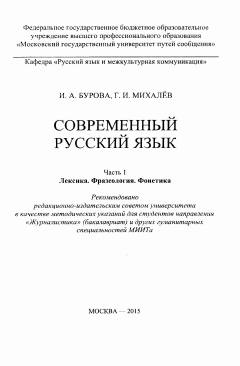

СРZamonaviy rus tilining leksika, frazeologiya va fonetika bo'limlari bo'yicha uslubiy qo'llanma.
Ushbu o'quv-uslubiy qo'llanma zamonaviy rus tilining leksika, frazeologiya va fonetika bo'limlariga bag'ishlangan bo'lib, amaliy mashg'ulotlar va mustaqil ishlar uchun mo'ljallangan. Kitobda ishchi dastur, nazariy va amaliy materiallar, shuningdek talabalarning kasbiy kompetentsiyalarini shakllantirishga qaratilgan topshiriqlar keltirilgan. Nashr gumanitar yo'nalishdagi talabalar, xususan jurnalistika mutaxassisligi talabalari uchun tavsiya etiladi.